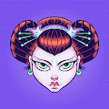 Crypto Geishas 创世纪合集来自加密世界的神秘而神秘的贵妇。 限量系列 100 个可收藏的 Crypto Geisha。版本：10/10、5/5 或 1/1 + 特价。10个氏族瓜分了领地！收集
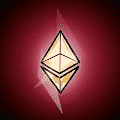 Crypto Gems First Edition Crypto Gems 是 Crypto Mages 投资俱乐部的一部分。拥有 Crypto Mages NFT 代表在 Metaverse 中拥有土地。它提供了在元界拥有土地的机会，而无需投资数万美元。NFT 出售所得资金将用于在元界
Crypto Heroes Club Crypto Heroes 的独家俱乐部，在元宇宙中保持平衡！通过铸造 Crypto Heroes NFT 成为俱乐部的创始成员。Crypto Heroes Club 正在推出其第一滴 - Crypto Hero-I，Polygon 区
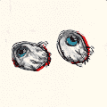 Crypto Hobos Crypto Hobos 宠物合作伙伴：第一个手工绘制的生成 NFT 项目，Crypto Hobos 融合了 NFT 空间的美术和个人资料图片类型。艺术家 Valiahmed Popov 破坏了构成该项目的 200 多个特征的源
Crypto Hodlers NFT Crypto Hodlers 是 10,000 名 Hodlers 的集合，他们以 ERC-721 NFT 的形式生活在以太坊区块链上。拥有 Crypto Hodler 代币可授予会员专属福利，例如独家 NFT、活动和礼物。Crypto Hodlers 是由超过
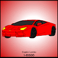 Crypto Lambos One 我们现在处于 3 天赠品阶段。让您的 Crypto Lambo suuuuper 打折！作为 Crypto Lambo 的前 75 位拥有者之一，您将可以访问独家的 Crypto Lambo 收藏俱乐部。作为对您早期支持的一种享受，您将获
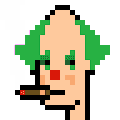 Crypto Marcs 欢迎来到 Crypto Marcs，这是 2022 年夏季排名第一的 meme NFT 项目。你来到这里是因为你已经证明你对模因、链上 NFT 和包含冲击力的像素有着精致的品味。什么是加密
Crypto Misha Punks 这不仅仅是一个模因。这是有史以来最大的模因<3经过 [CryptoFanBoi]米莎的自由！多边形链上的 NFT ARTIST 模因系列在派对超过 100 个 KCC Unicorn Limited
Crypto Nijigen Girls 欢迎来到[Crypto Nijigen]！GameFi 史上首创。Crypto Nijigen Girls (CNG) NFT 最初发布在以太坊主网上。现在开始组建你的团队！一起战斗！我
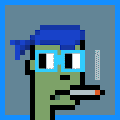 Crypto Noun Punks 没有路线图。没有特质。没有道。没有实用性。没有学士学位。只是眼镜和镜面朋克。为艺术买单。Crypto Noun Punks NFT - 常见问题（FAQ） ▶ 什么是加密名
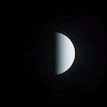 Crypto Planets 一次探索一个星球，探索宇宙。Crypto Planets 是一个有限的 3D 项目，包含 150 个独特的副本。每个星球都是独一无二的，并以 1/1 版本出售。一次探索一个星球，
Crypto Potato Heads Crypto Potato Heads 为你而来！Crypto Potato Heads 是 10 000 个独特 NFT 的集合。铸造成本 0.05 MATIC - 帮助社区获得无气体解决方案 在此处铸造你的 NFT -惊喜！所以对于[#Thank
Crypto Raiders Characters CryptoRaiders 是一款基于实用程序的 NFT RPG 游戏，您可以在其中突袭每周的地牢以获取装备和战利品，但要小心……死亡是永久性的 这是官方的 CryptoRaiders Polygon角色集合招
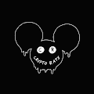 Crypto Rats Secret Society 凭借社区的力量，Crypto Rats Secret Society 现在正在重塑品牌，成为一个更强大、更好的社区！Crypto Rats Secret Society 是一个你已经知道的地毯。我们没有停下来接受
Crypto SE7EN Society K-pop 明星 SEVEN 想以七种不同的心情接近你。SEVEN 的七种心情想通过表演与 SEVEN 通过 Mood 呈现一场特别的活动。7 MOODS 我们为 NFT 持有者提供 NFT 的差异化价值，有权决定
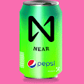 Crypto Soda Cans Crypto Soda Cans 是 8,000 个独特的 NFT 的集合 - 一个在全球流行的可收藏苏打罐的数字版本。拥有超过 10 种变体和无穷无尽的特征组合，每个 Soda can NFT 都包含一个可验证的稀有和
Crypto Tech Women Collection NFT Crypto Tech Women 社区是存储在以太坊区块链上的 8,888 个独特的 ERC-721 代币的 NFT 生成集合。 我们的目的是支持和赋权女性进入科技领域并在科技领域取得成功。 我们设想一个非凡
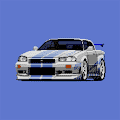 Crypto Tuners 加密调谐器统计 创建于大约 1 年前 5,000 代币供应 5% 费用 3,484 名 Discord 成员 过去 7 天内没有出售任何加密调谐器。 5,000 个 JDM Legends 停在位于以太坊区块链的停车场中。 加密调谐器
Crypto-Native 来自 Mirage Gallery 的 Crypto-Native 不断发展的 NFT。如果你正在等待你的作品进化。请务必单击 OpenSea 上的“刷新元数据”按钮，等待，然后重新加载页面。演化规则是： 销售必须比
CrypToadz by GREMPLIN CrypToadz 是一个收集 6969 种小型两栖生物，试图逃离邪恶国王 Gremplin 的暴虐统治。由 Gremplin 创建，并在他的朋友的一点点帮助下。该项目属于公共领域。随意以任何你想要的方式
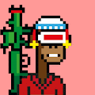 CryptoApeRevolution Crypt Ape Revolution 是存储在 Polygon 区块链上的 10,000 个可收藏 (ERC 721) NFT。每个 Ape 角色都是一个独特的像素艺术图像。抓住你的色彩疯狂！CryptoApeRevolutio
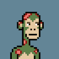 CryptoApes Official CryptoApes 是 Primary Alt 的旗舰角色，这是一家现代工作室，专注于通过创新的基于 NFT 的实用程序和讲故事来创造替代身份和体验。持有至少一个 CryptoApes 以获得独特的体验（寻宝）
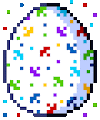 CryptoBeasts 恭喜！你偶然发现了一个稀有蛋CryptoBeasts Dragoon 呼吸着永不熄灭的火焰！CryptoBeasts Eulia 是一种出生在魔法森林中的难以捉摸的生物
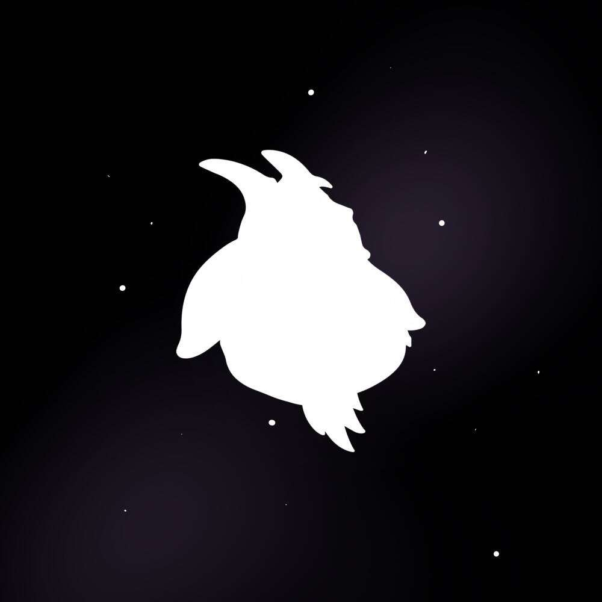 CRYPTOBILIA GOATS OFFICIAL 第一个体育大逃杀NFT项目！体育直播，真人秀，传奇奖品！Cryptobilia 通过以太坊区块链将来自全球的体育迷聚集在一起。通过拥有 5,000 只山羊
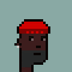 CryptoBrokePunks 官方 CryptoBrokePunks | 朋克，但只适用于破产的人。你喜欢 CryptoPunks 但你从来都买不起？那么这是适合您的项目。你破产了，但你仍然想拥有一个或多个美丽的小混混？那么，再一
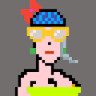 CryptoChicks CLUB 它们将是 5000 多只由其制造商特别打造的 Cryptochicks，以突出全世界女性的重要性！检查我们的路线图！Polygon 上 5000 个独特的像素女性代
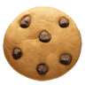 CryptoCookies Achievements 第一款 NFT 闲置游戏CryptoCookies 是一款经济背景复杂的 NFT 趣味休闲游戏。 在对 NFT 游戏空间有些失望之后，一群开发者决定创建一个公平有趣的游
CryptoMutts CryptoMutts 是以太坊区块链上 10,000 个随机生成的 NFT 的集合。采用 CryptoMutt 包括成为第一个 NFT 艺术俱乐部的成员。会员将提前获得创作者 Kenny Schachter 提供的艺术内容，包括艺术市场文章和
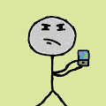 Crypton Stickmen 你厌倦了所有那些猿、朋克和涂鸦复制的收藏吗？是的？这就是为什么 CRYPTON STICKMEN 已经批准了 OPENSEA！ 该系列包括 10000 个独特的 CRYPTON STICKMEN。它们是由
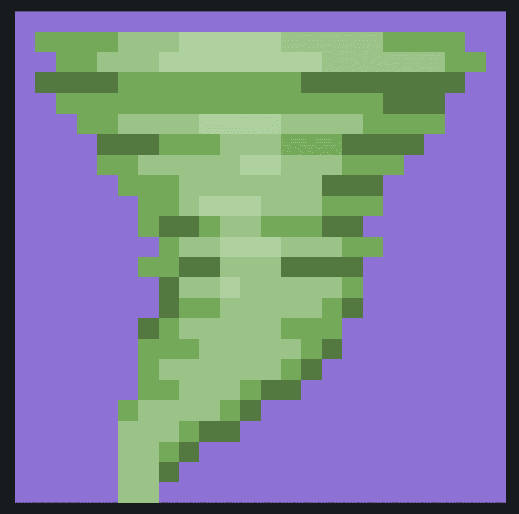 CryptoNados 人们已经开始制作抵抗艺术来抗议 Tornado Cash 开发商的被捕。 这是 Tornado Cash 智能合约的副本，编码为艺术品。 这是关于言论自由。 这是关于隐私的。 这就是我们在这里的原
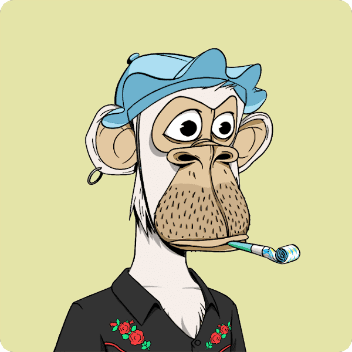 Cryptopainter 2022+ 用我的数码 Photoshop 画笔描绘加密货币的历史。 离开电影业去追逐我儿时的梦想，那就是让我的艺术作品出现在博物馆和网络墙上，而不是在大屏幕上看到我的画作。
CryptoPenguin NFTs CryptoPenguin NFT 统计 创建于 4 个月前 944代币供应 5% 费用 过去 7 天没有出售 CryptoPenguin NFT。 Crypto Penguin 是 10000 个限量版不可替代的 ERC-721 代币。每个 NFT 数量都是唯一的。加密企鹅 NFT 用于元
cryptopiskelli 一旦您完成购买，我们将向您发送一系列电子邮件📫，其中包含您成为 cryptopiskello 所需的一切： 在币安购买 MATIC 让自己成为你自己的 Metamask 🦊 向 Metamask 发送加密货币➡️ 4.薄荷p
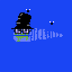 CryptoPolz CryptoPolz NFT - 常见问题（FAQ） ▶ 什么是 CryptoPolz？ CryptoPolz 是一个 NFT（不可替代令牌）集合。存储在区块链上的数字艺术品集合。 ▶ 有多少 CryptoPolz 代币？ 总
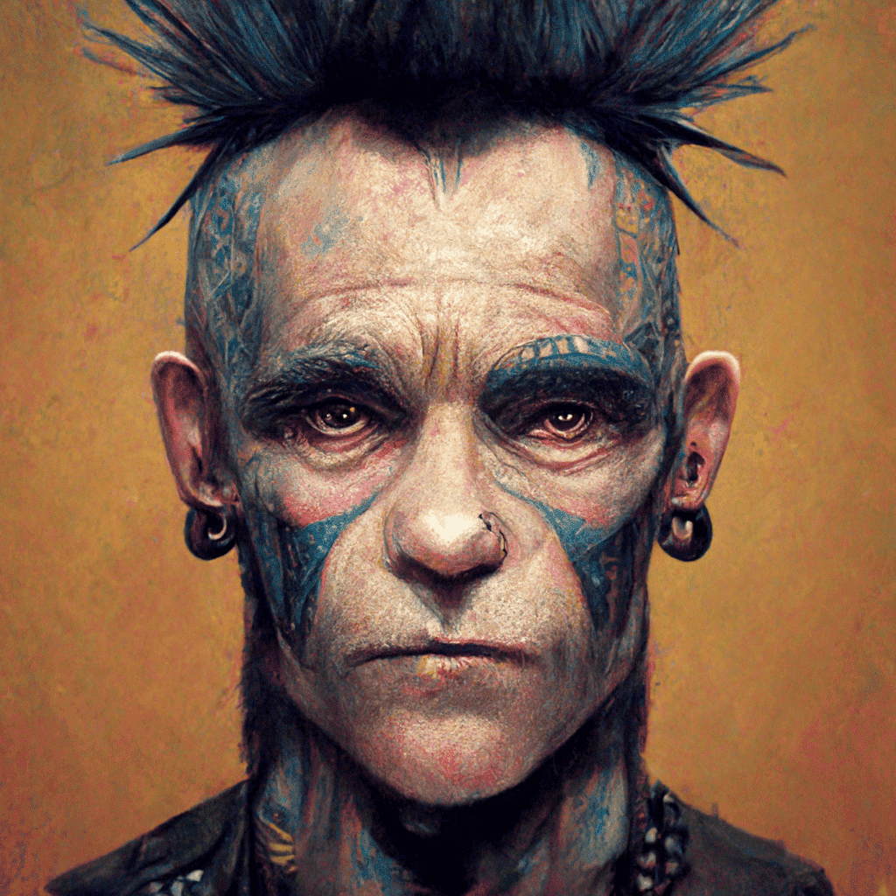 CryptoPunks Undead Yacht Club CryptoPunks 亡灵统计 创建于 6 个月前 141代币供应 0% 费用 过去 7 天内没有出售 CryptoPunks Undead。 CryptoPunks Undead 是来自神秘死钱包地址 0x26f744711ee9e5079c 的 141 个 CryptoPunks 的集合。该系列由 141 个稍微改动
CryptOrchids CryptOrchid 属 10 种，稀有程度各异。当你发芽种子时确定物种，你可以在铸造代币后进行。CryptOrchids 可以长生不老，不能繁殖，并且数量限制在 10,000 只以
Cryptoshack Club Cryptoshack 是 7,200 个有趣的角色的集合。我们的社区驱动项目是一款独一无二的多维游戏，将永远重新定义 NFT 行业。这里有适合每个人的东西。 Cryptoshack 的创建只考虑了一件事，
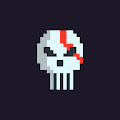 CryptoSkulls CryptoSkulls 是存储在Ethereum / Polygon区块链上的 10,000 个可收藏的 ERC-721 非同质代币 (NFT) 。 每个 CryptoSkull 字符都是具有唯一性索引属性的唯一像素艺术。此属性显示所
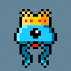 CryptoTentacles 外观是社会中非常重要的一点，拥有自己的 NFT 头像将使您在审美上与其他用户区分开来。 他们还将为您提供各种福利，例如免费可定制的土地、解锁 F2P 和 P2E 游戏
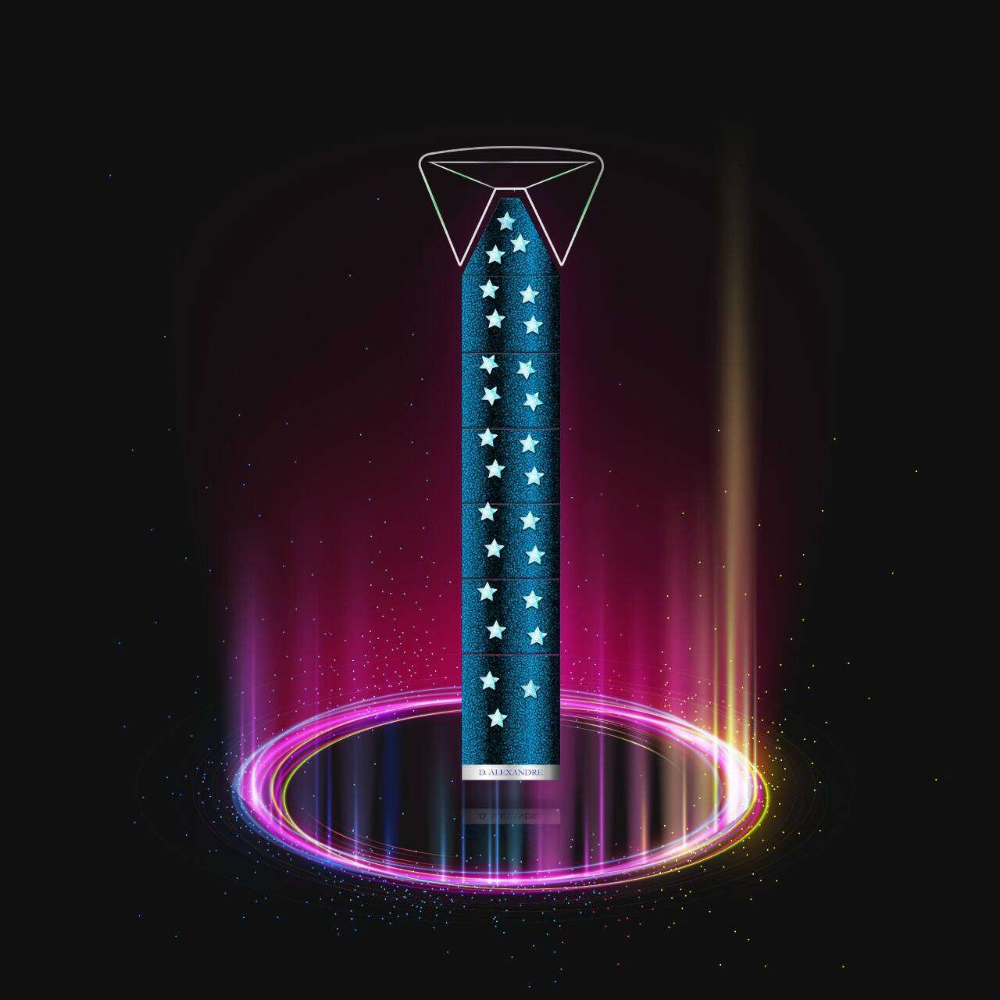 Cryptoties by Diego Alexandre 迭戈·亚历山大 他出生在布宜诺斯艾利斯，他生活和工作的城市。 1988 - 1999与Ricardo Garabito一起学习绘画。 1986 - 1988与Hécto
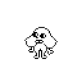 CryptoTitVags CryptoTitVags 代表了 NFT 技术状态的下一个转移。该掉落物包含 4200 个随机生成的 CryptoTitVags。CryptoTitVags 代表了 NFT 技术状态的下一个转移
CryptoToysClubNFT 1.Crypto Toys Club是做什么的？ 帮助音乐人、漫画家、电影制作人推出自己的 NFT 并以权利和粉丝 DAO 的形式从中获利。 Crypto Toys Club DAO 会做什么？ 为音乐家、漫画家和电影制